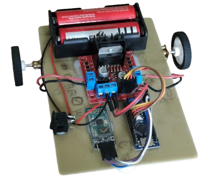
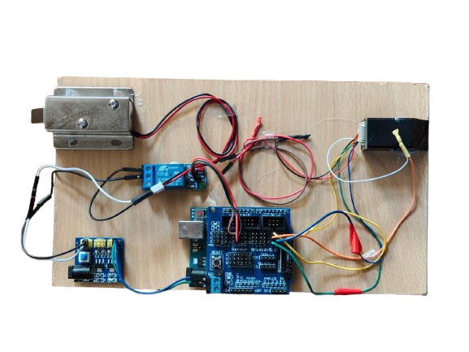
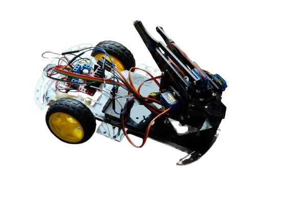
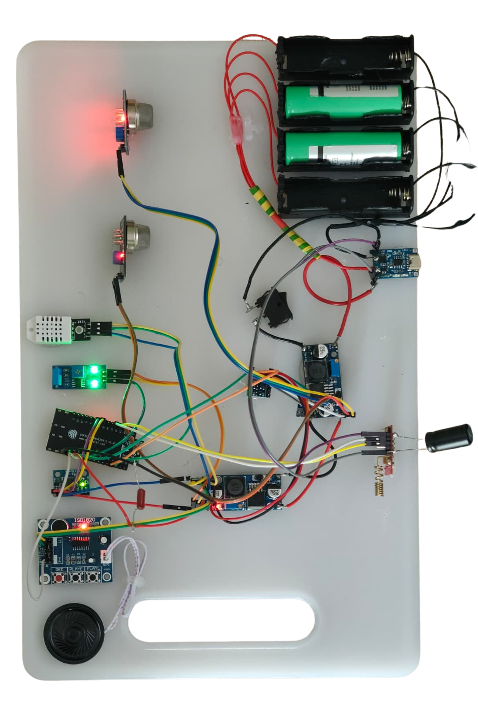

Proiecte ghidate
Proiectele mele (pe rand, fiecare cu pagina separata)
Fiecare proiect are o descriere scurta, imagini si un buton care deschide o pagina separata cu detalii.
Proiect 1
Robot Bluetooth (controlat de pe telefon)
Un robot pe care il controlezi prin Bluetooth, folosind o aplicatie de pe telefon (mers inainte/inapoi, stanga/dreapta).
- Control: Bluetooth (telefon).
- Ce inveti: comunicatie Bluetooth si comenzi simple.
- Nivel: incepator spre mediu.

Proiect 2
Incuietoare pe amprenta
Un proiect de securitate care foloseste un senzor de amprenta pentru a permite accesul doar utilizatorilor inregistrati.
- Focus: identificare biometrica + control mecanism.
- Ce inveti: autentificare si validare utilizatori.
- Nivel: mediu.

Proiect 3
Brat robotic
Un proiect care arata controlul pe mai multe axe si miscarea coordonata pentru ridicare/rotire/prindere.
- Focus: servomotoare + mecanica.
- Ce inveti: control pe unghiuri si alimentare stabila.
- Nivel: mediu.

Proiect 4
Sistem de alarma multi-senzor
Detectie in timp real cu 7 senzori + alerta instant prin WiFi/WebSocket, SMS (SIM800L) si sirena locala.
- Platforma: ESP32-C6 + ESP-IDF + FreeRTOS.
- Focus: multitasking real-time, WebSocket, GSM.
- Nivel: avansat.

Urmatorul pas